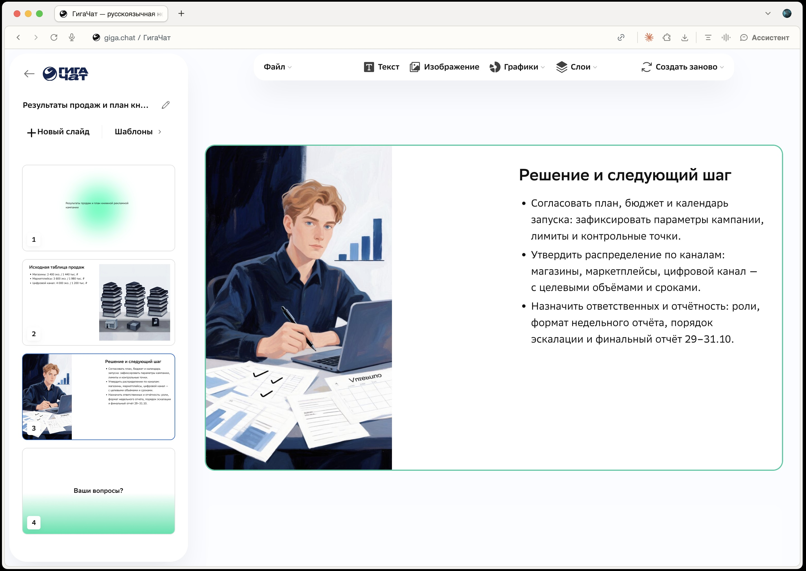
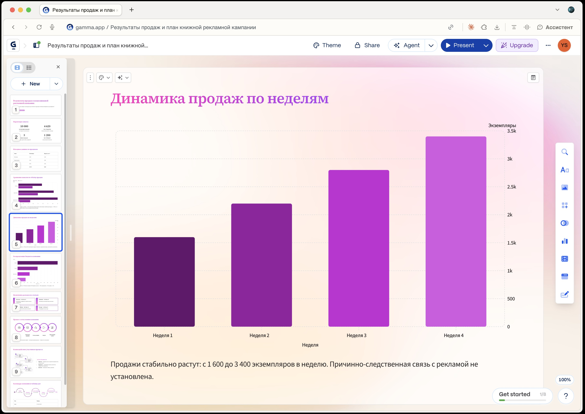

МАРАФОН «ИИ В РАБОТЕ» · АСТ · ЛИТРЕС · ЭКСМО
Создание
презентаций
с ИИ
От задачи и фактов
к слайдам и диаграммам
Ярослав Шуваев
От задачи и фактов
к слайдам и диаграммам
Ярослав Шуваев
Получить HTML-презентацию в DeepSeek.
Создать Google Презентацию кодом.
Передать ответ ИИ в Marplio.
Создать и открыть слайды в редакторе.
Передать содержание и выбрать оформление.
Тема, аудитория, цель, исходные данные и план слайдов.
В тренажёре одно описание подставляется во все промпты. Его можно заменить своей задачей.
Презентацию, которая открывается в браузере.
Если предпросмотра нет, сохраните код как presentation.html и откройте в браузере.
Презентацию в Google Диске, в которой можно менять текст и расположение блоков.
Apps Script выполняет код: создаёт файл, добавляет слайды и оформляет содержание.
Marp превращает текст с разметкой Markdown в презентацию.
В исходнике задаются содержание, границы слайдов и оформление. ИИ может подготовить этот исходник целиком.
Marplio — отдельный онлайн-редактор для сборки слайдов из текста.
У него свой формат графиков и настроек. Промпт в тренажёре уже содержит требования Marplio.
Слайды из ответа DeepSeek — прямо в онлайн-редакторе.
Один запрос готовит текст, таблицы, графики и схемы. Отдельно писать код диаграмм не нужно.
Дальше можно менять текст, изображения и оформление.

Если график не появился, попросите DeepSeek в том же чате: «Сделай этот график отдельно в SVG по данным выше». Вставьте результат на слайд.
